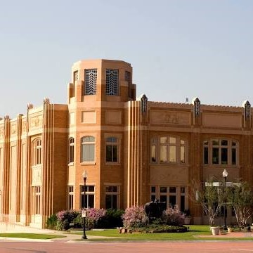
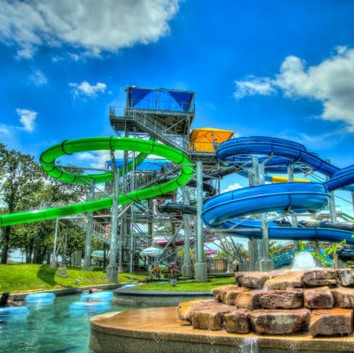
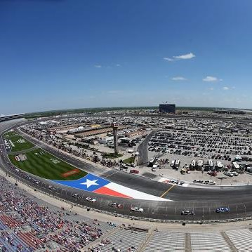
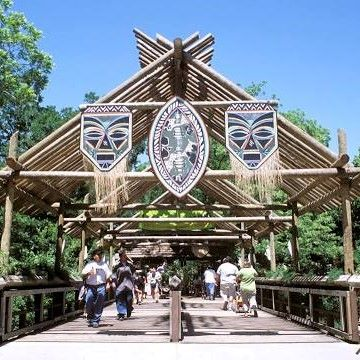

Welcome to Fort Worth!
"Where The West Begins"

History
The fertile, game-rich land surrounding the banks of the Trinity River
had long been a favorite hunting ground for Native Americans in the area,
but it soon proved irresistible to settlers as well.
A settlement had been established by Jonathon Bird in the winter of 1840,
three miles east of where Birdville is today. In 1843, Sam Houston came to
what was then called Fort Bird or Bird’s Fort and remained more than a
month, awaiting chiefs from different tribes to discuss a peace parley.
Houston departed, leaving Gen. Edward H. Tarrant and George W. Terrell to
meet with the chiefs. When the tribes came to the negotiating table, a
treaty was made under which the Native Americans were to remain to the west
of a line traced passing through the future site of Fort Worth. The line
marked “Where the West Begins” — giving Fort Worth its famous slogan.
For more history, go to https://www.fortworthtexas.gov/about/history
Demographics
Fort Worth is a city located in Tarrant County Texas. It is also the county seat of Tarrant County. With a 2020 population of 942,323, it is the 5th largest city in Texas (after Houston, San Antonio, Dallas, and Austin) and the 12th largest city in the United States . Fort Worth is currently growing at a rate of 1.77% annually and its population has increased by 27.13% since the most recent census, which recorded a population of 741,206 in 2010. Fort Worth reached it's highest population of 942,323 in 2021. Spanning over 354 miles, Fort Worth has a population density of 2,727 people per square mile. The average household income in Fort Worth is $82,977 with a poverty rate of 14.49%. The median rental costs in recent years comes to $1,060 per month, and the median house value is $169,700. The median age in Fort Worth is 32.6 years, 32 years for males, and 33.3 years for females.
Fun Things To Do in Fort Worth
The National Cowgirl Museum and Hall of Fame
The National Cowgirl Museum and Hall of Fame is located in Fort Worth, Texas, US. Established in 1975, it is dedicated to honoring women of the American West who have displayed extraordinary courage and pioneering fortitude. The museum is an educational resource with exhibits, a research library, and rare photography collection. It annually adds Honorees to its Hall of Fame.
NRH20 Family Water Park
NRH2O Family Water Park, stylized as NRH₂O, is a water park located in North Richland Hills, Texas, owned by the City of North Richland Hills. The park opened in 1995 and contains water slides, a swimming pool, a wave pool, and a lazy river.
Texas Motor Speedway
Texas Motor Speedway is a speedway located in the northernmost portion of the U.S. city of Fort Worth, Texas – the portion located in Denton County, Texas. The reconfigured track measures 1.44 miles with banked 20° in turns 1 and 2 and banked 24° in turns 3 and 4. Texas Motor Speedway is a quad-oval design, where the front straightaway juts outward slightly. The track layout is similar to Atlanta Motor Speedway and Charlotte Motor Speedway. The track is owned by Speedway Motorsports, Inc.
Fort Worth Zoo
The Fort Worth Zoo is a zoo in Fort Worth, Texas, United States, that was founded in 1909 with one lion, two bear cubs, an alligator, a coyote, a peacock and a few rabbits. The zoo now is home to 7,000 native and exotic animals and has been named as a top zoo in the nation by Family Life magazine, the Los Angeles Times and USA Today, as well as one of the top zoos in the South by Southern Living Reader's Choice Awards. The Fort Worth Zoo is accredited by the Association of Zoos and Aquariums.